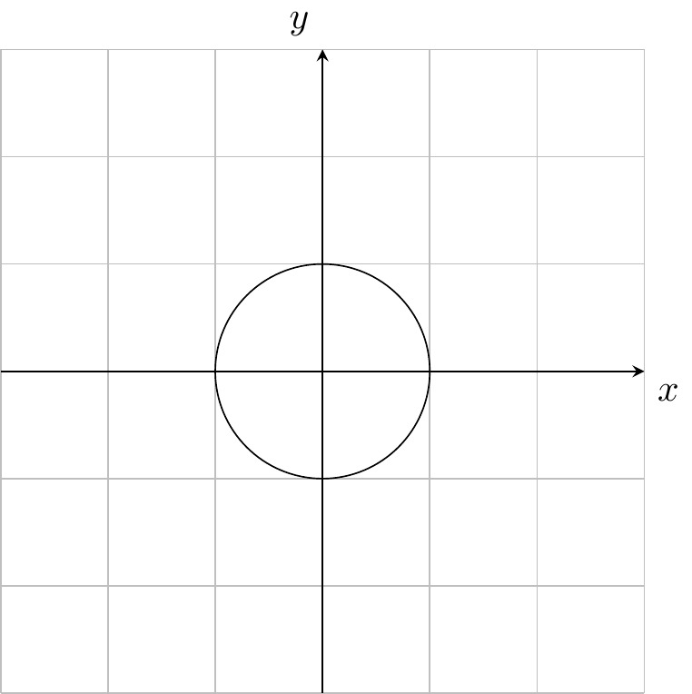
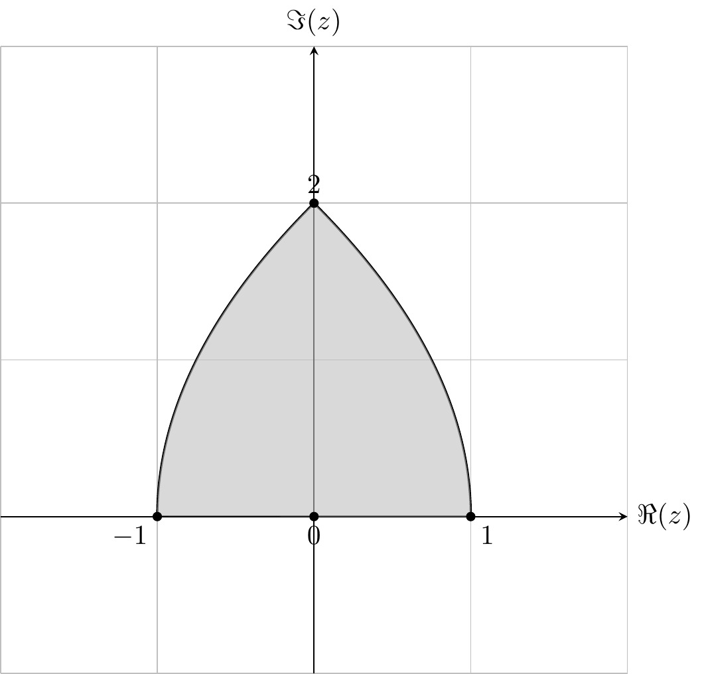

where \(z_1=(x_1,y_1)\) and \(z_2=(x_2,y_2).\) We call \(x=\Re(z)\) the real part and \(y=\Im(z)\) the imaginary part of \(z.\)
From Section 3.8 in MA1006 Algebra we recall:
Proposition 1.1 The complex numbers are a field.
Remark 1.1.
We view the real numbers as a subset of \(\C\) by identifying \(x\in\R\) with \((x,0)\in\C.\) The imaginary unit is \(i=(0,1).\) With these conventions, a calculation using Equation 1.2 shows that
\[
z=x+iy.
\tag{1.3}\]
Using this notation, we can manipulate complex numbers in the same way as real numbers, keeping in mind the identity
\[
i^2=-1.
\tag{1.4}\]
Of course, \(\C\) is a one-dimensional vector space over itself. Restricting the scalar multiplication to \(\R\) makes \(\C\) into a vector space over \(\R,\) isomorphic to \(\R^2,\) of dimension two with standard basis \(1,i\in\C.\)
Proposition 1.2
In the standard basis, every \(A=\begin{pmatrix}a&b \\
c&d\end{pmatrix} \in\M_{2\t2}(\R)\) corresponds uniquely to an \(\R\)-linear map \(T_A\colon\C\to\C,\) namely \[
T_A(x+iy)=(ax+by)+i(cx+dy).
\tag{1.5}\]
\(T_A\) is \(\C\)-linear \(\iff\)\(a=d\) and \(b=-c.\) In this case, \[
T_A(z)=\al\cdot z,\qquad \al=a+ic.
\tag{1.6}\]
Proof.
This is a recap from linear algebra. An \(\R\)-linear map \(T\colon\C\to\C\) is uniquely determined by the image of the basis vectors \(T(1),\)\(T(i)\) which, conversely, may be prescribed arbitrarily. If we write \(T(1)=a+ic,\)\(T(i)=b+id,\) then the linear transform \(T\) is described entirely by \(a,b,c,d\in\R.\) The expression Equation 1.5 is obtained by expanding the left hand side by \(\R\)-linearity.
In the same way, \(\C\)-linear maps correspond to \(\al\in\M_{1\t1}(\C)\) as in Equation 1.6. An \(\R\)-linear map \(T_A\) is \(\C\)-linear \(\iff\)\(T_A(i)=T_A(i1)=iT_A(1)\)\(\iff\)
\[\begin{pmatrix}b \\
d
\end{pmatrix}
=T_A(i)=iT_A(1)=i\begin{pmatrix}a \\
c
\end{pmatrix}
=\begin{pmatrix}-c \\
a
\end{pmatrix}.\]
In this case, \(T_A(x+iy)=(ax-cy)+i(cx+ay)=\al(x+iy).\)
Definition 1.2 The conjugate of \(z\in\C\) is the complex number \[\ol{z}=(x,-y),\]and the modulus (also called absolute value) is\[|z|=\sqrt{x^2+y^2}\geqslant0.\]
Proposition 1.3 The following formulas hold for \(z,w\in \C:\)
Thinking of complex numbers as points in the plane, we can use polar coordinates to represent them (see Figure 1.1).
Figure 1.1: Polar coordinates
Proposition 1.5 For every non-zero complex number \(z=(x,y)\) there is an argument\(\th\in\R\) and a radius\(r=|z|>0\) such
\[x=r\cos(\th), y=r\sin(\th). \tag{1.9}\]
This representation is unique up to replacing \(\th\) by \(\th+2\pi k\) for any \(k\in\Z.\)
Proof. (omitted)
Since \(x^2+y^2=r^2(\cos(\th)^2+\sin(\th)^2)=r^2,\) the radius must be \(r=|z|.\) Define the complex number \(w=r^{-1}z\) and write \(w=u+iv\) for its real and imaginary parts.
We will prove the existence of \(\th\in\R\) with \(u=\cos(\th),\)\(v=\sin(\th).\) This also proves the existence of a representation Equation 1.9, by multiplying by \(r.\) Since \(u^2+v^2=|w|^2=r^{-2}|z|^2=1,\) we know \(|u|\leqslant1,\)\(|v|\leqslant1.\) Recall that \(\cos\colon[0,\pi]\to[-1,1]\) and \(\sin\colon[-\pi/2,\pi/2]\to[-1,1]\) are bijections. Hence \[\begin{align*}
u&=\cos(\al) &&\text{ for some }\al\in[0,\pi], \\
v&=\sin(\be) &&\text{ for some }\be\in[-\pi/2,\pi/2].
\end{align*}\] As \(\sin(\be)^2=v^2=1-u^2=1-\cos(\al)^2=\sin(\al)^2,\) we have \(\sin(\al)=\pm\sin(\be)=\sin(\pm\be).\) To produce the correct \(\th,\) we distinguish two cases.
Case 1
\(\al\in[0,\pi/2].\) Then \(\al=\pm\be\) by the injectivity of the sine function on the interval \([-\pi/2,\pi/2].\) Setting \(\th=\pm\al=\be,\) we find that \(u=\cos(\th)\) and \(v=\sin(\th),\) as required.
Case 2
\(\al\in[\pi/2,\pi].\) Then \(\pi-\al, \be\in[-\pi/2,\pi/2]\) and \(\sin(\pi-\al)=\sin(\al)=\pm\sin(\be),\) so \(\pi-\al=\pm\be\) by injectivity. Setting \(\th=\pm\al=\pm\pi-\be,\) we find \(u=\cos(\th), v=\sin(\th),\) using trigonometric identities.
This completes the existence part of the proof. For uniqueness, we already know that \(r=|z|>0\) is unique, so it remains to consider \[\begin{align*}
x&=r\cos(\th_1)=r\cos(\th_2),
&y&=r\sin(\th_1)=r\sin(\th_2).
\end{align*}\] To translate the situation into an interval that we understand, pick \(k_1, k_2\in \Z\) so that \(\th_1 + 2\pi k_1, \th_2 + 2\pi k_2 \in [-\pi,\pi).\) Then \[\cos(\th_1+2\pi k_1)=\cos(\th_1)=\cos(\th_2)=\cos(\th_2+2\pi k_2).\]
Using the injectivity of the cosine function and considering cases as above, we find that \(\th_1+2\pi k_1 = \pm(\th_2+2\pi k_2).\) If the sign is ‘\(+\)’ we get \(\th_1-\th_2=2\pi(k_2-k_1)\) and we are done, so suppose \(\th_1+2\pi k_1 = -(\th_2+2\pi k_2).\) Then \[\sin(\th_1)=\sin(\th_2)=\sin(\th_2+2\pi k_1)=-\sin(\th_1+2\pi k_1)=-\sin(\th_1)\]
implies \(\sin(\th_1)=0.\) Therefore \(\th_1\) is a multiple of \(2\pi,\) which implies that \(\th_1+2\pi k_1 = -(\th_2+2\pi k_2)=0\) since these numbers were chosen in \([-\pi,\pi)\) and we have \(2\pi\Z\cap[-\pi,\pi)=\{0\}.\) Hence \(\th_1-\th_2=2\pi(k_2-k_1).\)
To get around the non-uniqueness of the argument in polar coordinates, we restrict \(\th\) to lie in a half-open interval of length \(2\pi.\) Here is the most common convention.
Definition 1.3 The principal argument of a non-zero \(z\in\C\) is the unique \(\th\in(-\pi,\pi]\) such that Equation 1.9 holds, and we write \(\arg(z)=\th.\)
Definition 1.4 The value of the exponential function at the complex number \(z=x+i\th,\) where \(x,\th\in\R,\) is defined as \[e^{x+i\th}=e^x\bigl(\cos(\th)+i\sin(\th)\bigr). \tag{1.10}\]
Proposition 1.5 implies that every complex number can be represented in polar form\[z=re^{i\th}. \tag{1.11}\]
The addition of complex numbers is the usual addition of vectors in \(\R^2.\) To visualize multiplication, the polar form is useful. Combining Equation 1.2 and Equation 1.10, we find that \[\begin{align*}
e^{i\th_1}\cdot e^{i\th_2}=&\cos(\th_1)\cos(\th_2)-\sin(\th_1)\sin(\th_2)\\
&+i\bigl[\cos(\th_1)\sin(\th_2)+\cos(\th_2)\sin(\th_1)\bigr] \\
=&\cos(\th_1+\th_2)+i\sin(\th_1+\th_2)=e^{i(\th_1+\th_2)}.
\end{align*}\] Here we have used the trigonometric addition formulas. Hence
Complex multiplication adds the angles and multiplies the radii.
Proposition 1.6\(e^{z_1}\cdot e^{z_2}=e^{z_1+z_2}\) for all \(z_1, z_2\in\C.\) Moreover, we have \((e^z)^n=e^{nz}\) for all \(z\in\C,\)\(n\in\Z.\)
Proof.
The first assertion follows from Equation 1.12 combined with the identity \(e^{x_1}e^{x_2}=e^{x_1+x_2}\) for \(x_1, x_2\in \R\) from MA1005 Calculus. The second claim follows from this by induction.
The polar form can be applied to the construction of \(n\)th roots.
For example, the nth root of unity is \(\ze_n=e^{i\frac{2\pi}{n}}\) and satisfies \[(\ze_n)^n=(e^{i\frac{2\pi}{n}})^n=e^{2\pi i}=1.\]
Proposition 1.7 Every complex number \(z\neq0\) has an \(n\)th root \(w\) satisfying \(w^n=z.\) If \(w\) is an \(n\)th root of \(z,\) the set of all \(n\)th roots of \(z\) is \[\bigl\{w, \ze_n\cdot w, \ze_n^2\cdot w,\ldots, \ze_n^{n-1}\cdot w\bigr\}.
\]
Proof.
Write \(z=re^{i\th}\) and \(w=se^{i\varphi}\) for \(\th,\varphi\in[0,2\pi)\) and \(r,s>0.\) By the uniqueness of the polar form, the equation \(w^n=z\) is equivalent to \(s^n=r\) and \(n\varphi=\th+2\pi k\) for some \(k\in\Z.\) Of course, \(s=\sqrt[n]{r}\) is the unique positive \(n\)th root from MA1005 Calculus. From \(0\leqslant n\varphi<2\pi n\) and \(0<-\th\leqslant2\pi\) we get \[0<k=\frac{n\varphi-\th}{2\pi}<n.\]
Since \(k\) is an integer, this implies \(k=0,\ldots,n-1\) and hence \(\varphi=\frac{\th+2\pi k}{n}\) for such \(k\) are the only possible solutions for \(\varphi.\) In summary, \[w_k = \sqrt[n]{r}e^{i\varphi}=\sqrt[n]{r}e^{i\frac{\th+2\pi k}{n}}=\ze_n^k\cdot w_0, k=0,\ldots,n-1,\]
are all the possible \(n\)th roots of \(z.\)
Questions for further discussion
The complex numbers are obtained by ‘adjoining’ a symbol \(i\) with \(i^2=-1.\) If instead we would have adjoined a different symbol \(\ep\) with \(\ep^2=-1,\) would the set of elements \(x+\ep y\) still define a field?
The real numbers have a total order ‘\(\leqslant\)’. Why doesn’t it make sense to extend this definition to the complex numbers?
Describe geometrically the set \(R_n=\{1,\ze_n,\ldots,(\ze_n)^{n-1}\}\) of \(n\)th roots of unity. Find a connection between \(R_n\) and the cyclic group \(C_n=\{\ol{0},\ldots,\ol{n-1}\}\) of integers modulo \(n\) from MX3020 Group Theory.
1.1 Exercises
Note
This problem sheet is intended as a recap and contains more problems than can be discussed during the tutorials.
Exercise 1.1
Verify \[z = x+iy\] and \[i^2 =-1\] straight from the definition Equation 1.2.
Solution 1.1
Let \(z = (x,y) \in \C\). Identifying \(x\) with \((x,0)\) and \(y\) with \((y,0)\). We calculate \[iy = (0,1)\cdot(y,0) =(0 - 0,0 +y)=(0,y).\] Consequently, \[x + iy = (x,0) + (0,y) = (x,y) = z.\]
To see that \(i^2 = -1\), we calculate \[(0,1)(0,1) = (0-1,0+0)= (-1,0).\] This yields the desired conclusion under the identification \(-1 = (-1,0)\).
Exercise 1.2
How many real solutions \(x\) does \(x^2+1=0\) have? Show that the polynomial equation \(z^2+1=0\) has exactly two solutions \(z\in\C.\)
Solution 1.2
This equation has no reals solutions. To find all solutions in \(\C\), we first rearrange to get \(z^2 = -1\). This means that \(z\) must be one of the square roots of \(-1\). There are at least two ways to find all possible values of \(z\).
Expressing \(-1\) in polar form, we have \(-1 = e^{i\pi}\).
By Proposition 1.7 the square roots of \(-1\), are \[ e^{\frac{i(\pi+ 2k\pi)}{2}}\] for \(k = 0,1\). This gives exactly two solutions: \[i = e^{\frac{i(\pi)}{2}}, \text{ and } -i = e^{\frac{i(\pi+ 2\pi)}{2}}.\]
The other approach is as follows. Write \(z = x+iy\). Then, \[z^2 = (x+iy)(x+iy) = (x^2-y^2) + i(2xy) = -1.\] This gives us two equations \[\begin{align}
x^2 -y^2 &= -1 \\
2xy &= 0.
\end{align}\] The second equation imples one of \(x\) or \(y\) is \(0\).
If \(x\) is \(0\), then \(-y^2 = -1\) and so \(y= \pm 1\).
If \(y\) is \(0\), then \(x^2 = -1\) and has no solutions (since \(x\) is a real number).
We conclude that \(x =0\) and \(y = \pm 1\), which gives exactly two values for \(z\), \(i\) and \(-i\).
Exercise 1.3
Give examples of complex numbers \(z,w\neq0\) such that \(z^2+w^2=0.\)
Exercise 1.3
Take \(z=1,\)\(w=i.\)
Exercise 1.4
Sketch the position of the complex numbers \(i, 1+i, \frac{3+2i}{4}\) in the plane.
Solution 1.4
Exercise 1.5
Express the following complex numbers \(z\) in the form \(x+iy\) with \(x,y\in\R.\)\[(1+i)^{20},\ (5+3i)(1+2i),\ (1-i)(2+3i),\ (1-i)i(1+i),\ \frac{2+i}{1-i}\]
Describe the sets \(A=\{z\in\C\mid\Im(z)>0\},\)\(B=\{z\in\C\mid\Re(z)\leqslant1\},\)\(C=\{z\in\C\mid \Re((1+i)z)=0\},\) and \(A\cap B\) geometrically.
Solution 1.8
The set \(A\) is the ‘upper half-plane’
The set \(B\) is the “left half-plane” shifted to the right
The set \(C\) is the straight line \(x = y\) since \(\Re((1+i)z) = x-y\).
The intersection of \(A\) and \(B\) is pictured below
Exercise 1.9
Describe the set \(D=\{z\in\C \mid z\cdot\overline{z}=1\}\) geometrically.
Hint: Write \(z=re^{i\th}\) in polar form.
Solution 1.9
Note that \(z \cdot \ol z = |z|^2\). Hence points in \(D\) satisfy the equation \(|z|^2 = 1\). This is the circle of radius one centred at the origin.

Exercise 1.10
Draw all nine sets described by the following conditions on the complex number \(z.\)\[\begin{align*}
|z|&=1,&|z|&<1,&1<&|z|<2,\\
|1+z|&>1,&|2-z|&<2,&3<&|z+i|<4,\\
|z-1|&<|z+1|,&|z|&=|z+1|,&|z-1|&=|z+i|.
\end{align*}\]
Solution 1.10
\(|z|=1\) is the unit circle.
\(|z|<1\) is the open disk of radius 1 with center the origin.
\(1<|z|<2\) is the open annulus centered at the origin with radii \(1\) and \(2.\)
The complement of the set defined by \(|1+z|>1\) is the set of all \(|1+z|\leqslant1,\) the closed disk of radius \(1\) centered at \(-1.\) Hence \(\{z\in\C\mid |1+z|>1\}\) is the complement of this closed disk.
\(|2-z|<2\) is the open disk of radius \(2\) centered at \(2.\)
\(3<|z+i|<4\) is an annulus centered at \(-i\) with radii \(3\) and \(4.\)
\(|z-1|<|z+1|\) is the set of points that are closer to \(1\) than to \(-1.\) This is the ‘right half-plane’ \(\{x+iy\mid x>0\}.\) In more detail, write \(z=x+iy.\) Then the inequality is equivalent to \((x-1)^2+y^2<(x+1)^2+y^2,\) so to \(-2x<2x.\) This just means \(x>0.\)
\(|z|=|z+1|\) is the set of points equidistant from \(0\) and \(-1.\) Write \(z=x+iy.\) Then the condition is equivalent to \(x^2+y^2=(x+1)^2+2(x+1)y+y^2,\) so equivalent to \(2x+1+y(2x+1)=0.\) This implies \(x=-1/2\) and therefore \(\{z\in\C\mid |z|=|z+1|\}\) is the straight line \(\{x+iy\mid x=-1/2\}.\)
\(|z-1|=|z+i|\) is the set of points equidistant from \(1\) and \(-i.\) This is again a straight line, namely \(\{x-ix\mid x\in\R\}.\) \end{itemize}
\(A\) is the square with corners \(\{0, 2, 2+2i, 2i\}\). \(B\) is the square with corners \(\{0, 1, 1-i, -i\}\). \(C\) is the square with corners \(\{0, -i, -1-i, -1\}\).
\(D\) is much harder to work out. It is shown in the picture. The edge joining \(0\) to \(1\) remains as it was. The edge joining \(1\) to \(1+i\) can be parametrised as \(\{1+it\mid 0\leqslant t\leqslant 1\}\) and, on squaring, becomes the curve parametrised as \(\{(1-t^2, 2t)\mid 0\leqslant t\leqslant 1\}\) and this is the right-hand curved edge. In the same way the line joining \(1+i\) to \(i\) becomes the left-hand curved edge. Finally, the line joining \(i\) to \(0\) becomes the line joining \(-1\) to \(0.\)

Exercise 1.12
Let \(D=\{z\in\C \mid |z|<1\}\) be the unit disk. Draw the sets \[A=\{2z \mid z\in D\},\quad B=\{z^2 \mid z\in D\},\quad C=\{|z| \mid z\in D\}.\]
Solution 1.12
Since \(|2z|=2|z|<2\iff |z|<1\) the set \(A\) is the open disk of radius \(2\) at the origin.
As \(|z^2|<|z|^2<1\) for \(z\in D\) we have \(B\subset D.\) Conversely, if \(w\in D,\) we know there exists a square root \(z\) with \(z^2=w.\) As \(|z|=|z^2|^{1/2}<|w|^{1/2}<1\) it follows that \(w\in B.\) Hence \(B=D.\)
\(C\) is the real interval \(\{x+i0\mid 0\leqslant x<1\}=[0,1).\)
Exercise 1.13
Show that \(i=e^{i\pi/2}\) and \(-1=e^{i\pi}.\)
Solution 1.13
We have \[e^{i\pi/2} = \cos(\pi/2) + i \sin(\pi/2) = 0 + i = i\] and \[e^{i\pi} = \cos(\pi) + i \sin(\pi) = -1 + 0 = -1.\]
Exercise 1.14
Express the following complex numbers \(z\) in the form \(x+iy\) with \(x,y\in\R.\)\[e^{i\pi/4},\ e^{i\pi},\ e^{i\frac{2\pi}{3}}
\]
Write each of the following complex numbers in polar form \(re^{i\theta}\) with \(r>0\) and \(-\pi<\theta\leqslant\pi.\)\[i, \quad -1, \quad -i, \quad 1+i, \quad 1-i, \quad i-1, \quad \frac{1}{2}+i\frac{\sqrt{3}}{2}\] Draw each of these numbers in the complex plane.
Be careful to take the angle in the correct range \(-\pi<\theta\leqslant\pi.\)
Exercise 1.16
Calculate \(i^{2021}\) and \((1+i)^{20}.\)
Solution 1.16
We use polar coordinates. For the first expression, \[i^{2021} = (e^{i\pi/2})^{2021}= (e^{i\pi/2})^{2020}(e^{i\pi/2}) = (e^{i\pi/2})^{2020} i .\] Now we express \((e^{i\pi/2})^{2020}\) as \[(e^{i\pi})^{1010} = (-1)^{1010} =1.\] We conclude that \(i^{2021} = i\).
For the second expression, we write \[(i+1)^{20} = \left(\sqrt{2} e^{i\pi/4}\right)^{20} = 2^{10}e^{i5\pi} = -1024.\]
Exercise 1.17
Solve the equation \((1 - i)^n - 2075 = 2021\) and find \(n\in\N.\)
Solution 1.17
Writing \(1-i=\sqrt{2}e^{-i\pi/4},\) the equation is equivalent to \(2^{n/2}e^{-i n\pi/4}=4096.\) Taking the modulus gives \(2^{n/2}=4096\) so necessarily \(n=24\) and indeed we have \((1-i)^{24}=4096.\)
Use these equations to extend the definition of the functions \(\cos(z), \sin(z)\) to complex arguments \(z\in\C.\) Find \(z\in\C\) with \(\sin(z)=2.\)
Hint: Put \(w=e^{iz}\) and reduce to a quadratic equation.
Solution 1.18
Expanding we have \[\begin{align}
\frac{e^{iz}+ e^{-iz}}{2} &= \frac{\cos z + i \sin z + \cos z - i \sin z }{2} &= \frac{2\cos z}{2} &= \cos z \\
\frac{e^{iz}- e^{-iz}}{2i} &= \frac{\cos z + i \sin z - \cos z + i \sin z }{2i} &= \frac{2i\sin z}{2i} &= \sin z.
\end{align}\]
We solve \[\sin z = \frac{e^{iz}- e^{-iz}}{2i} = 2\] for \(z \in \C\). Rearranging, we have \[e^{iz} - e^{-iz} = 4i.\]
Multiplying through by \(e^{iz}\) gives, \[e^{2iz} -4ie^{iz} -1 = 0\]. Setting \(t = e^{iz}\) gives the quadratic euqation:\[ t^2 -4i t -1 = 0\]. Solving, we get \[t = e^{i(x+iy)} = i(2 \pm \sqrt{3}).\] Expanding out the term \(e^{i(x+iy)}\), gives \[e^{-y}e^{ix} = i(2 \pm \sqrt 3).\] We conclude that \(x = \pi/2 + 2k \pi\) for \(k \in \Z\) (since \(e^{ix} = i\)) and \(y = -\ln(2 \pm \sqrt{3})\) (since \(e^{-y} = 2 \pm \sqrt{3}\)).
\(\ol{zw}=\ol{z}\cdot\ol{w}\) for all \(z,w\in\C\)
\(\ol{z_1z_2\cdots z_n} = \ol{z}_1\ol{z}_2\cdots\ol{z}_n\) for all \(z_1, z_2, \ldots, z_n\in\C\) (use induction)
\(\ol{(z^n)}=(\ol{z})^n\) for all \(z\in\C\)
Let \(p(z)=a_nz^n+a_{n-1}z^{n-1}+\ldots+a_1z+a_0\) be a polynomial with real coefficients \(a_0,\ldots,a_n\in\R.\) Prove that \(\ol{p(z)} = p({\ol{z}}).\) Deduce that all roots of \(p(z)\) occur in complex conjugate pairs.
Solution 1.19
Let \(z=x+iy\) and \(w=u+iv.\) Then \[\begin{align*}
zw&=(xu-yv)+i(xv+yu)\implies \ol{zw}=(xu-yv)-i(xv+yu)\\
\ol{z}\cdot\ol{w}&=(x-iy)(u-iv)=xu-yv+(-ivx-iyu).
\end{align*}\]
The base case \(n=1\) is trivial. For the inductive step, we have \[\begin{align*}
\ol{z_1\cdots z_nz_{n+1}}&=\ol{z_1\cdots z_n}\cdot\ol{z_{n+1}}&&\text{by (a)}\\
&=(\ol{z_1}\cdots\ol{z_n})\ol{z_{n+1}}&&\text{by induction.}
\end{align*}\]
follows from (b) by setting \(z_1=\cdots=z_n=z.\)
We have \[\begin{align*}
\ol{p(z)}&=\ol{a_nz^n+\ldots+a_1z+a_0}\\
&=\ol{a_nz^n}+\ldots+\ol{a_1z}+\ol{a_0}&&\text{since $\ol{\cdots}$ is additive}\\
&=\ol{a_n}\ol{z^n}+\ldots+\ol{a_1}\cdot\ol{z}+\ol{a_0}&&\text{by a.}\\
&=a_n\ol{z}^n+\ldots+a_1\ol{z}+a_0&&\text{by (c) and since $a_k\in\R$}\\
&=p(\ol{z}).
\end{align*}\] Finally, suppose \(p(\zeta)=0.\) Then \(p(\ol{\zeta})=\ol{p(\zeta)}.\)
Exercise 1.20
Show that \(|z|=|{-z}|\) and \(|\ol z|=|z|.\) Prove also that \(|\la z|=\la |z|\) for all \(\la\geqslant 0.\)
Noting that \(\Re(z\ol w) = xu + yv\), we have \[|z+w|^2 = |z|^2 + 2\Re(z\ol w) + |w|^2\] as required.
For the second part write \(w = \lambda z\) for some \(\lambda \in \C\). We show that \(\lambda\) is a positive real number. Suppose \(|z + w| = |z| + |w|\) then \[|z + \lambda z| = |z| + |\lambda z|.\] It follows, assuming \(z \ne 0\) that \[|1 + \lambda| = |1| + |\lambda|.\] Using the preceding part \(2\Re(\lambda) = 2|\lambda|\) and we conclude that \(|\lambda| = \Re(\lambda)\) and so \(\lambda\) is a positive real number.
If \(z = 0\), then we may take \(\lambda = 0\).
Exercise 1.25
Assuming we know the triangle inequality \(|z+w|\leqslant |z|+|w|\) for all \(z,w\in\C,\) prove the reverse triangle inequality \[|z-w|\geqslant\bigl||z|-|w|\bigr|.\]
Solution 1.25
Applying the triangle inequality to \(z\) and \(w-z\) gives \[|w|=|z+(w-z)|\leqslant|z|+|w-z|,\] which we rearrange to \[|w| - |z| \leqslant |w-z|.\tag{A}\] By exchanging the roles of \(z\) and \(w\) we get \[|z| - |w| \leqslant |z-w|.\tag{B}\] The two inequalities (A) and (B) are equivalent to the single inequality \(\bigl||z|-|w|\bigr|\leqslant |z-w|.\)
Exercise 1.26
Let \(K\) be a field with \(\R\subset K \subset\C.\) Prove that \(K=\R\) or \(K=\C.\)
Solution 1.26
Suppose that \(K\neq\R.\) Then there exists \(z=x+iy\in K\) with \(y\neq 0\). We know that \(x\in K\) since \(x\) is real. So, by the basic properties of a field, \(iy=z-x\in K.\) Now \(y\) is real (so in \(K\)) and non-zero. So \(i=(iy)/y\in K.\) That’s all we need, since we can now deduce that \(x+iy\in K\) for all \(x,y\in\R.\)
Dowson, H. R. 1979. “Serge Lang, Complex Analysis (Addison-Wesley, 1977), Xi + 321 Pp., £1200.”Proceedings of the Edinburgh Mathematical Society 22 (1): 65–65. https://doi.org/10.1017/S0013091500027838.
Jameson, G. J. O. 1987. “H. A. Priestley, Introduction to Complex Analysis (Oxford University Press, 1985), 197 Pp., £8.50.”Proceedings of the Edinburgh Mathematical Society 30 (2): 325–26. https://doi.org/10.1017/S0013091500028406.